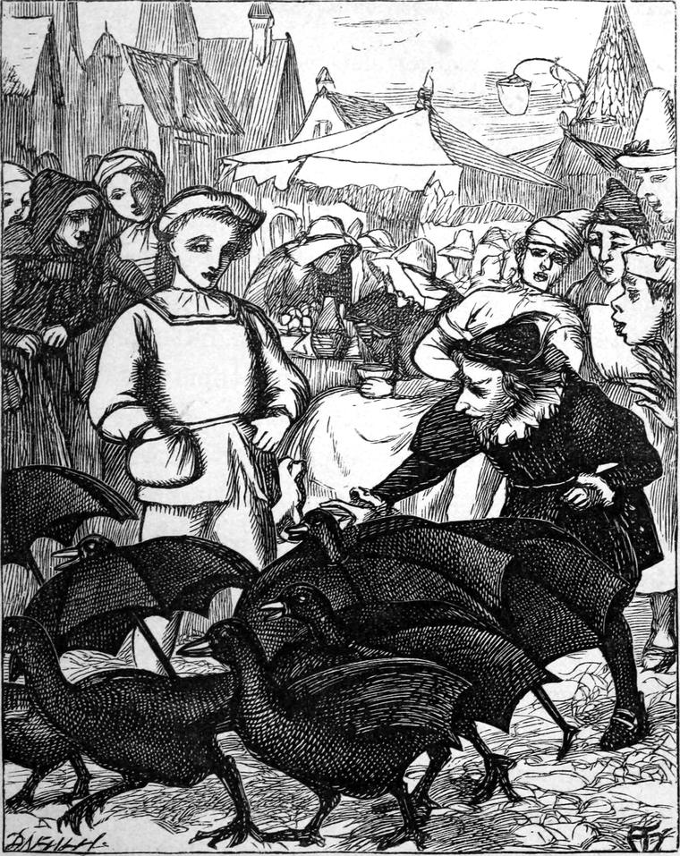

Richard—which is name enough for a fairy story—was the son of a widow in Alice's village. He was so poor that he did not find himself generally welcome; so he hardly went anywhere, but read books at home, and waited upon his mother. His manners, therefore, were shy, and sufficiently awkward to give an unfavourable impression to those who looked at outsides. Alice would have despised him; but he never came near enough for that.
Now Richard had been saving up his few pence in order to buy an umbrella for his mother; for the winter would come, and the one she had was almost torn to ribands. One bright summer evening, when he thought umbrellas must be cheap, he was walking across the market-place to buy one: there, in the middle of it, stood an odd-looking little man, actually selling umbrellas. Here was a chance for him! When he drew nearer, he found that the little man, while vaunting his umbrellas to the skies, was asking such absurdly small prices for them, that no one would venture to buy one. He had opened and laid them all out at full stretch on the market-place—about five-and-twenty of them, stick downwards, like little tents—and he stood beside, haranguing the people. But he would not allow one of the crowd to touch his umbrellas. As soon as his eye fell upon Richard, he changed his tone, and said, "Well, as nobody seems inclined to buy, I think, my dear umbrellas, we had better be going home." Whereupon the umbrellas got up, with some difficulty, and began hobbling away. The people stared at each other with open mouths, for they saw that what they had taken for a lot of umbrellas, was in reality a flock of black geese. A great turkey-cock went gobbling behind them, driving them all down a lane towards the forest. Richard thought with himself, "There is more in this than I can account for. But an umbrella that could lay eggs would be a very jolly umbrella." So by the time the people were beginning to laugh at each other, Richard was half-way down the lane at the heels of the geese. There he stooped and caught one of them, but instead of a goose he had a huge hedgehog in his hands, which he dropped in dismay; whereupon it waddled away a goose as before, and the whole of them began cackling and hissing in a way that he could not mistake. For the turkey-cock, he gobbled and gabbled and choked himself and got right again in the most ridiculous manner. In fact, he seemed sometimes to forget that he was a turkey, and laughed like a fool. All at once, with a simultaneous long-necked hiss, they flew into the wood, and the turkey after them. But Richard soon got up with them again, and found them all hanging by their feet from the trees, in two rows, one on each side of the path, while the turkey was walking on. Him Richard followed; but the moment he reached the middle of the suspended geese, from every side arose the most frightful hisses, and their necks grew longer and longer, till there were nearly thirty broad bills close to his head, blowing in his face, in his ears, and at the back of his neck. But the turkey, looking round and seeing what was going on, turned and walked back. When he reached the place, he looked up at the first and gobbled at him in the wildest manner. That goose grew silent and dropped from the tree. Then he went to the next, and the next, and so on, till he had gobbled them all off the trees, one after another. But when Richard expected to see them go after the turkey, there was nothing there but a flock of huge mushrooms and puff-balls.

"I have had enough of this," thought Richard. "I will go home again."
"Go home, Richard," said a voice close to him.
Looking down, he saw, instead of the turkey, the most comical-looking little man he had ever seen.
"Go home, Master Richard," repeated he, grinning.
"Not for your bidding," answered Richard.
"Come on, then, Master Richard."
"Nor that either, without a good reason."
"I will give you such an umbrella for your mother."
"I don't take presents from strangers."
"Bless you, I'm no stranger here! Oh, no! not at all." And he set off in the manner usual with him, rolling every way at once.
Richard could not help laughing and following. At length Toadstool plumped into a great hole full of water. "Served him right!" thought Richard. "Served him right!" bawled the goblin, crawling out again, and shaking the water from him like a spaniel. "This is the very place I wanted, only I rolled too fast." However, he went on rolling again faster than before, though it was now uphill, till he came to the top of a considerable height, on which grew a number of palm-trees.
"Have you a knife, Richard?" said the goblin, stopping all at once, as if he had been walking quietly along, just like other people.
Richard pulled out a pocket-knife and gave it to the creature, who instantly cut a deep gash in one of the trees. Then he bounded to another and did the same, and so on till he had gashed them all. Richard, following him, saw that a little stream, clearer than the clearest water, began to flow from each, increasing in size the longer it flowed. Before he had reached the last there was quite a tinkling and rustling of the little rills that ran down the stems of the palms. This grew and grew, till Richard saw that a full rivulet was flowing down the side of the hill.
"Here is your knife, Richard," said the goblin; but by the time he had put it in his pocket, the rivulet had grown to a small torrent.
"Now, Richard, come along," said Toadstool, and threw himself into the torrent.
"I would rather have a boat," returned Richard.
"Oh, you stupid!" cried Toadstool crawling up the side of the hill, down which the stream had already carried him some distance.
With every contortion that labour and difficulty could suggest, yet with incredible rapidity, he crawled to the very top of one of the trees, and tore down a huge leaf, which he threw on the ground, and himself after it, rebounding like a ball. He then laid the leaf on the water, held it by the stem, and told Richard to get upon it. He did so. It went down deep in the middle with his weight. Toadstool let it go, and it shot down the stream like an arrow. This began the strangest and most delightful voyage. The stream rushed careering and curveting down the hill-side, bright as a diamond, and soon reached a meadow plain. The goblin rolled alongside of the boat like a bundle of weeds; but Richard rode in triumph through the low grassy country upon the back of his watery steed. It went straight as an arrow, and, strange to tell, was heaped up on the ground, like a ridge of water or a wave, only rushing on endways. It needed no channel, and turned aside for no opposition. It flowed over everything that crossed its path, like a great serpent of water, with folds fitting into all the ups and downs of the way. If a wall came in its course it flowed against it, heaping itself up on itself till it reached the top, whence it plunged to the foot on the other side, and flowed on. Soon he found that it was running gently up a grassy hill. The waves kept curling back as if the wind blew them, or as if they could hardly keep from running down again. But still the stream mounted and flowed, and the waves with it. It found it difficult, but it could do it. When they reached the top, it bore them across a heathy country, rolling over purple heather, and blue harebells, and delicate ferns, and tall foxgloves crowded with bells purple and white. All the time the palm-leaf curled its edges away from the water, and made a delightful boat for Richard, while Toadstool tumbled along in the stream like a porpoise. At length the water began to run very fast, and went faster and faster, till suddenly it plunged them into a deep lake, with a great splash, and stopped there. Toadstool went out of sight, and came up gasping and grinning, while Richard's boat tossed and heaved like a vessel in a storm at sea; but not a drop of water came in. Then the goblin began to swim, and pushed and tugged the boat along. But the lake was so still, and the motion so pleasant, that Richard fell fast asleep.